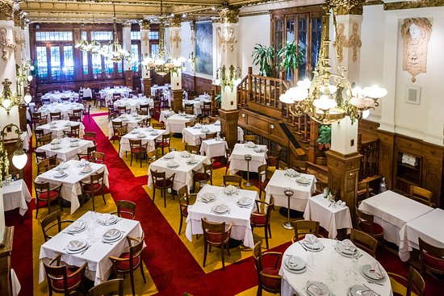
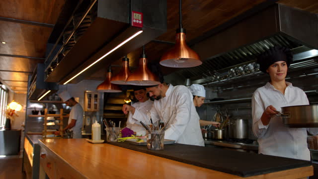

Nuestro Nuevo Local
Nos complace anunciar la apertura de nuestro nuevo local en el corazón de Santiago. Después de años de satisfacer a nuestros clientes con deliciosos platillos españoles en nuestra ubicación anterior, decidimos expandirnos para ofrecer una experiencia aún mejor. Con un ambiente renovado y acogedor, nuestro nuevo local te espera para disfrutar de la auténtica comida española en un entorno único.



Dirección
Av. Providencia 1234, Santiago, Chile
Horario de Apertura
Lunes a Viernes: 12:00 PM - 11:00 PM
Sábado y Domingo: 1:00 PM - 12:00 AM